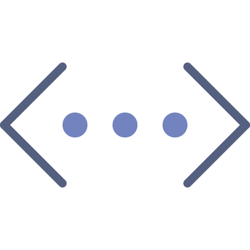

Help file version 09.01.2024 by M. Tedeschi, P. Lanari & T. Markmann
Table of content
EPMA
- Standard data: File Standards.txt | Import standards | Adjusting standard positions | Adding new standard point(s)
- Map calibration
- Local bulk compositions
LA-ICPMS
- Import standards
- Calibrate intensity data
- Filter values below LOD
- Generate spider plots
This help file contains a description of the tools available in the Calibrate section.
The following steps are required to convert raw intensity maps from EPMA or LA-ICPMS into chemical composition maps:
The spot analyses used as internal standards in the calibration of EPMA data are hereafter referred to as "standards" as they allow the definition of a calibration curve correlating X-ray intensities with composition (e.g. expressed in oxide/element wt%).
It is necessary to import the standards from a standard file, check their positions and possibly correct them, check the chemical compositions and possibly create new standards. All these steps can be done more or less automatically in XMapTools 4.
The file Standards.txt contains (i) the map coordinates and (ii) the spot analyses used for standardisation. The map coordinates must be listed in a single line below the keyword >1. The oxide order is set below the keyword >2. X and Y must be the last two labels and must be listed in this specific order. The internal standard analyses are listed below the keyword >3 according to the oxide order defined above (keyword >2).
>1 Map coordinates (Xmin Xmax Ymax Ymin)
56.739 57.239 43.691 43.371
>2 Oxide order
SiO2 MgO FeO Al2O3 X Y
>3 Spot analyses
25.4800 11.260 29.050 21.1400 1.4800 68.310 39.999
52.9400 3.5300 3.0200 24.2300 0.0197 68.310 39.535
52.5800 3.6300 2.7900 24.7200 0.0195 68.331 39.511
The Import (Import spots for Standards (from file)) button is used to import standards from a file.
 The Import from Standards.txt box is checked by default, allowing the file 'standards.txt' to be read automatically. If the file containing the standards data has a different name, uncheck the box and you will be able to select a file in the Pick a File pop-up window.
The Import from Standards.txt box is checked by default, allowing the file 'standards.txt' to be read automatically. If the file containing the standards data has a different name, uncheck the box and you will be able to select a file in the Pick a File pop-up window.
In this version of XMapTools, all standards must be stored in a single file. It is not possible to import standards from different files as existing standards will be deleted when a new file is loaded.
Once loaded, standards are displayed on the main map with a label including the spot number, and multiple plots are generated and displayed in the Standards category of the Live Display module. This global visualisation can be obtained at any stage by selecting Standards (Spots) from the secondary menu. Three plots are generated when an element is selected in the primary menu, from top to bottom: a plot showing intensity/composition versus sequence of standards to visualise if there is a good match between the standard compositions and the intensity values of the matching pixels; two correlation maps, one for the element selected in the primary menu and a second one considering all elements.

Figure 1: Standard display available if the item "Standards (Spots)" is selected in the secondary menu.
To adjust the positions, display the map of a diagnostic element (Intensity) and select "Standards (Spots)" in the secondary menu. The two correlations maps should show a maximum value in yellow and the blue spot representing the current position should be centered on this optimum.
To adjust the position of the standards (all at once), put the mouse cursor over the blue circle showing up a transparent circle. Click on it and move the blue circle to the new position. The values in the two white field on top will be adjusted. Then click on the button Refresh (important) to update the standard positions. The Refresh button is only available when standard positions have been changed and nee to be saved.
Note: If there is no good correlation for a given element, the higher value in the second figure may not represent the optimal position.
It is possible to add new standard spots directly in XMapTools. Note that these are not saved in the Standards.txt file, and if the file is reloaded any changes will be lost.
 The Add Standard Spot button adds a new standard at selected coordinates, set by clicking on the map after pressing the button. Compositional data can be entered directly into the table when this standard is selected.
The Add Standard Spot button adds a new standard at selected coordinates, set by clicking on the map after pressing the button. Compositional data can be entered directly into the table when this standard is selected.
How to proceed:
A calibration step also known as standardisation is required to convert intensity maps into compositional maps (Lanari et al. (2019)).
All minerals/masks are calibrated at the same time in XMapTools 4. Therefore it is necessary to select a Mask File in the secondary menu to activate the Calibrate button.
The new approach implemented in XMapTools 4 provides a module for automatic multi-phase calibration. Please note that this is a preliminary version of the calibration assistant. We expect significant progress in the coming years as the algorithm is trained to face the most difficult situations. In the meantime, please contact Pierre Lanari (pierre.lanari@unibe.ch) if your case is not well handled by the algorithm.
 The Calibrate button opens the calibration wizard for EPMA data. This button is only available when a mask file is selected in the secondary menu.
The Calibrate button opens the calibration wizard for EPMA data. This button is only available when a mask file is selected in the secondary menu.
Instructions for using the Calibration Assitant for EPMA are available in the help file accessible from the assistant.
A local bulk composition (abbreviated as LBC) represents the bulk composition of a spatial domain in a rock determined by integrating pixel compositions. As discussed in Lanari and Engi (2017), it is necessary to apply a density correction before exporting a local bulk composition.
To export the Local Bulk composition, the following steps should be used:
A density map is a map containing density data for each pixel of a map. It is calculated for a given mask file. First select a mask file from the secondary menu.
 The Generate Density Map (from a mask file) button allows a density map to be generated from the selected mask file.
A mask file should be selected to activate the button
The Generate Density Map (from a mask file) button allows a density map to be generated from the selected mask file.
A mask file should be selected to activate the button  . Pressing this button opens a window with predefined average density values (provided that the mineral name has bee recognised and a reference value available in the internal database; if full English mineral names are used, the mineral should be recognised).
. Pressing this button opens a window with predefined average density values (provided that the mineral name has bee recognised and a reference value available in the internal database; if full English mineral names are used, the mineral should be recognised).
Note: mineral density values can be obtained from the website webmineral.com
A density map is created and saved under the Other category in the Primary Menu with the name 'Density [maskfile_name]' (the name of the mask file used is shown in brackets). Each mask file requires the calculation of a density map.
Merged maps are maps for which all pixels have a chemical composition. A merged map is created automatically by the standardisation function in XMapTools 4. If you need to create a merged map manually, follow the procedure below.
From the primary menu, expand Quanti and select a Quanti Map (Mineral). The Merge button in the Calibrate section becomes available.
A local bulk composition can be calculated from a region of interest (ROI). The ROI can be a rectangle or a polygon. Density correction is applied automatically.
Select a merged map in the primary menu and select an element/oxide.
From the drop down menu, select the desired ROI shape: Retangle ROI or Polygon ROI.
If an ROI is available, the Local Bulk Composition table will appear in the Live Display module. The first column shows the list of elements, with the compositions listed in the Composition column (unit: wt%). Below the table is a pie chart showing the distribution of elements/oxides by weight.
The ROI can be edited and the composition values in the table and the pie chart are automatically updated. If it is not possible to edit or move the ROI, select XMapTools, press ctr (control) and try to edit the ROI again.

The density map used is shown in a drop-down menu located in the live display module .
 The button Copy Data to clipboard may be used to copy the LBC data from the table.
The button Copy Data to clipboard may be used to copy the LBC data from the table.
 The button Save may be used to save the LBC data as a .txt file.
The button Save may be used to save the LBC data as a .txt file.
An uncertainty approximation similar to that described in Lanari and Engi (2017) is available.
Select a merge map and create a Rectangle ROI. Specify the number of simulations Sim (default 100) and the shift Px in pixels (default 20). The shape will be randomly shifted and resized using two random variables calculated from the shift value (assuming a Gaussian distribution and the value of Px as 1 sigma expressed in number of pixels). Click on the Calculate uncertainties using Monte Carlo button 
The areas used to approximate an uncertainty are plotted in a new figure and the result is displayed in the table of the live display module (Figure 3).

Figure 3: Uncertainty estimation for LBC. The figure on the left shows the distribution of the 100 ranges used to determine the uncertainty (here taken as the standard deviation). The table on the right shows the results. The composition column shows the original local bulk composition (selected ROI). The column 2std shows the 2 standard deviation value (note that the distributions are usually Gaussian, as shown by Lanari & Engi (2017)). The last column shows the mean of all compositions. This value should match the composition of the original ROI. If not, this means that a Gaussian distribution cannot be assumed for this element and the uncertainty is not correct.
Only standard maps generated by the Converter for LA-ICPMS can be imported and used to calibrate LA-ICPMS maps in XMapTools.
The Import (Import Standards Maps (from file)) button opens a pop up window in which the file 'MapStandards_Import.mat' must be selected. This file is located in the 'Maps_cps' folder created by the converter module.
Standard data cannot be modified in XMapTools. Existing data is automatically deleted when new data is selected after the Import button is pressed. Updating the interface can take up to a minute depending on the number of standard maps available.
Once standard data has been imported, it is available in the Standards (Maps) category of the Secondary Menu. Select an element to plot a map corresponding to the intensity of the primary standard material. Other maps are available in the list: El_Int_Back is the map of the number of integrations for background; El_Comp is the composition of the standard in µg/g; El_Sweeps_Back is the number of sweeps for the background and El_Sweeps_Pixel, the number of sweeps per pixel.
As with EPMA, the calibration tool for LA-ICPMS data requires a mask file, so the Calibrate button is only available if a mask file is selected in the secondary menu.
 The Calibrate (Open LA-ICP-MS Calibration Tools) button opens the Calibration Assistant.
The Calibrate (Open LA-ICP-MS Calibration Tools) button opens the Calibration Assistant.
Instructions for using the Calibration Assitant for LA-ICPMS are available in the help file accessible from the assistant.
The Duplicate and Apply LOD Filter button is available when a Quanti file is selected from the primary menu. It duplicates the Quanti file and filters all pixels below the detection limit. Note that it is strongly recommended to apply this filter before interpreting the data (Markmann et al. 2024).
The number of pixels filtered is shown in the log file:
LOD filtering:
Na: 5 px below detection limit (0.10002%)
P: 3602 px below detection limit (70.5168%)
K: 92 px below detection limit (1.8167%)
Cr: 376 px below detection limit (7.3438%)
Ni: 3896 px below detection limit (75.9602%)
Rb: 2745 px below detection limit (54.3134%)
Sr: 13 px below detection limit (0.2585%)
Ba: 150 px below detection limit (3.0006%)
La: 264 px below detection limit (5.1643%)
Ce: 6 px below detection limit (0.11739%)
Pr: 105 px below detection limit (2.046%)
Tm: 33 px below detection limit (0.64215%)
Yb: 10 px below detection limit (0.19459%)
Lu: 108 px below detection limit (2.1016%)
Hf: 1859 px below detection limit (36.2449%)
Pb: 723 px below detection limit (14.1765%)
Example of LOD filtering for garnet show in the log file. The number in brackets is the number of pixels filtered out.
 The Spider (Open Spider Module) button opens the Spider Plot module. This button is only available when a Quanti file or any map within a Quanti file is selected from the primary menu.
Instructions for using the Spider Module are available in the help file accessible from within the module.